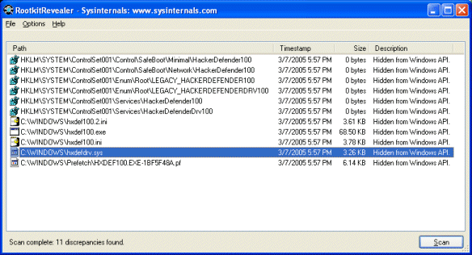

RootkitRevealer is an advanced rootkit detection utility. It runs on Windows NT 4 and higher and its output lists Registry and file system API discrepancies that may indicate the presence of a user-mode or kernel-mode rootkit. RootkitRevealer successfully detects all persistent rootkits published at www.rootkit.com, including AFX, Vanquish and HackerDefender (note: RootkitRevealer is not intended to detect rootkits like Fu that don't attempt to hide their files or registry keys). If you use it to identify the presence of a rootkit please let us know!
The reason that there is no longer a command-line version is that malware authors have started targetting RootkitRevealer's scan by using its executable name. We've therefore updated RootkitRevealer to execute its scan from a randomly named copy of itself that runs as a Windows service. This type of execution is not conducive to a command-line interface. Note that you can use command-line options to execute an automatic scan with results logged to a file, which is the equivalent of the command-line version's behavior.
Because rootkits can use various mechanisms to detect RootkitRevealer's presence and foil detection by not hiding their objects from a scan, we are licensing a private build of RootkitRevealer for a fee available to qualified security organizations. Email us from your corporate email account if you represent a security company and would like to license the private build.
The term rootkit is used to describe the mechanisms and techniques whereby malware, including viruses, spyware, and trojans, attempt to hide their presence from spyware blockers, antivirus, and system management utilities. There are several rootkit classifications depending on whether the malware survives reboot and whether it executes in user mode or kernel mode.
Persistent Rootkits
A persistent rootkit is one associated with malware that activates each time the system boots. Because such malware contain code that must be executed automatically each system start or when a user logs in, they must store code in a persistent store, such as the Registry or file system, and configure a method by which the code executes without user intervention.
Memory-Based Rootkits
Memory-based rootkits are malware that has no persistent code and therefore does not survive a reboot.
User-mode Rootkits
There are many methods by which rootkits attempt to evade detection. For example, a user-mode rootkit might intercept all calls to the Windows FindFirstFile/FindNextFile APIs, which are used by file system exploration utilities, including Explorer and the command prompt, to enumerate the contents of file system directories. When an application performs a directory listing that would otherwise return results that contain entries identifying the files associated with the rootkit, the rootkit intercepts and modifies the output to remove the entries.
The Windows native API serves as the interface between user-mode clients and kernel-mode services and more sophisticated user-mode rootkits intercept file system, Registry, and process enumeration functions of the Native API. This prevents their detection by scanners that compare the results of a Windows API enumeration with that returned by a native API enumeration.
Kernel-mode Rootkits
Kernel-mode rootkits can be even more powerful since, not only can they intercept the native API in kernel-mode, but they can also directly manipulate kernel-mode data structures. A common technique for hiding the presence of a malware process is to remove the process from the kernel's list of active processes. Since process management APIs rely on the contents of the list, the malware process will not display in process management tools like Task Manager or Process Explorer.
Since persistent rootkits work by changing API results so that a system view using APIs differs from the actual view in storage, RootkitRevealer compares the results of a system scan at the highest level with that at the lowest level. The highest level is the Windows API and the lowest level is the raw contents of a file system volume or Registry hive (a hive file is the Registry's on-disk storage format). Thus, rootkits, whether user mode or kernel mode, that manipulate the Windows API or native API to remove their presence from a directory listing, for example, will be seen by RootkitRevealer as a discrepancy between the information returned by the Windows API and that seen in the raw scan of a FAT or NTFS volume's file system structures.
Can a Rootkit hide from RootkitRevealer?
It is theoretically possible for a rootkit to hide from RootkitRevealer. Doing so would require intercepting RootkitRevealer's reads of Registry hive data or file system data and changing the contents of the data such that the rootkit's Registry data or files are not present. However, this would require a level of sophistication not seen in rootkits to date. Changes to the data would require both an intimate knowledge of the NTFS, FAT and Registry hive formats, plus the ability to change data structures such that they hide the rootkit, but do not cause inconsistent or invalid structures or side-effect discrepancies that would be flagged by RootkitRevealer.
Is there a sure-fire way to know of a rootkit's presence?
In general, not from within a running system. A kernel-mode rootkit can control any aspect of a system's behavior so information returned by any API, including the raw reads of Registry hive and file system data performed by RootkitRevealer, can be compromised. While comparing an on-line scan of a system and an off-line scan from a secure environment such as a boot into an CD-based operating system installation is more reliable, rootkits can target such tools to evade detection by even them.
The bottom line is that there will never be a universal rootkit scanner, but the most powerful scanners will be on-line/off-line comparison scanners that integrate with antivirus.
RootkitRevealer requires that the account from which its run has assigned to it the Backup files and directories, Load drivers and Perform volume maintenance tasks (on Windows XP and higher) privileges. The Administrators group is assigned these privileges by default. In order to minimize false positives run RootkitRevealer on an idle system.
For best results exit all applications and keep the system otherwise idle during the RootkitRevealer scanning process.
If you have questions or problems please visit the Sysinternals RootkitRevealer Forum.
To scan a system launch it on the system and press the Scan button. RootkitRevealer scans the system reporting its actions in a status area at the bottom of its window and noting discrepancies in the output list. The options you can configure:
RootkitRevealer supports several options for auto-scanning systems:
usage: rootkitrevealer [-a [-c] [-m] [-r] outputfile]
Note that the file output location must be on a local volume.
If you specify the -c option it does not report progress and discrepancies are printed in CSV format for easy import into a database. You can perform scans of remote systems by executing it with the Sysinternals PsExec utility using a command-line like the following:
psexec \\remote -c rootkitrevealer.exe -a c:\windows\system32\rootkit.log
This is a screenshot of RootkitRevealer detecting the presence of the popular HackerDefender rootkit. The Registry key discrepancies show that the Registry keys storing HackerDefender's device driver and service settings are not visible to the Windows API, but are present in the raw scan of the Registry hive data. Similarly, the HackerDefender-associated files are not visible to Windows API directory scans, but are present in the scan of the raw file system data.
You should examine all discrepancies and determine the likelihood that they indicate the presence of a rootkit. Unfortunately, there is no definitive way to determine, based on the output, if a rootkit is present, but you should examine all reported discrepancies to ensure that they are explainable. If you determine that you have a rootkit installed, search the web for removal instructions. If you are unsure as to how to remove a rootkit you should reformat the system's hard disk and reinstall Windows.
In addition to the information below on possible RootkitRevealer discrepancies, the RootkitRevealer Forum at Sysinternals discusses detected rootkits and specific false-positives.
These discrepancies are the ones exhibited by most rootkits, however, if you haven't checked the Hide NTFS metadata files you should expect to see a number of such entries on any NTFS volume since NTFS hides its metada files, such as $MFT and $Secure, from the Windows API. The metadata files present on NTFS volumes varies by version of NTFS and the NTFS features that have been enabled on the volume. There are also antivirus products, such as Kaspersky Antivirus, that use rootkit techniques to hide data they store in NTFS alternate data streams. If you are running such a virus scanner you'll see a Hidden from Windows API discrepancy for an alternate data stream on every NTFS file. RootkitRevealer does not support output filters because rootkits can take advantage of any filtering. Finally, if a file is deleted during a scan you may also see this discrepancy.
This is a list of NTFS metadata files defined as of Windows Server 2003:
RootkitRevealer should never report this discrepancy since it uses mechanisms that allow it to access any file, directory, or registry key on a system.
A file system scan consists of three components: the Windows API, the NTFS Master File Table (MFT), and the NTFS on-disk directory index structures. These discrepancies indicate that a file appears in only one or two of the scans. A common reason is that a file is either created or deleted during the scans. This is an example of RootkitRevealer's discrepancy report for a file created during the scanning:
C:\newfile.txt
3/1/2005 5:26 PM
8 bytes
Visible in Windows API, but not in MFT or directory index.
Rootkits can attempt to hide themselves by misrepresenting the size of a Registry value so that its contents aren't visible to the Windows API. You should examine any such discrepancy, though it may also appear as a result of Registry values that change during a scan.
Registry values have a type, such as DWORD and REG_SZ, and this discrepancy notes that the type of a value as reported through the Windows API differs from that of the raw hive data. A rootkit can mask its data by storing it as a REG_BINARY value, for example, and making the Windows API believe it to be a REG_SZ value; if it stores a 0 at the start of the data the Windows API will not be able to access subsequent data.
The Windows API treats key names as null-terminated strings whereas the kernel treats them as counted strings. Thus, it is possible to create Registry keys that are visible to the operating system, yet only partially visible to Registry tools like Regedit. The Reghide sample code at Sysinternals demonstrates this technique, which is used by both malware and rootkits to hide Registry data. Use the Sysinternals Regdellnull utility to delete keys with embedded nulls.
This discrepancy will occur if a Registry value is updated while the Registry scan is in progress. Values that change frequently include timestamps such as the Microsoft SQL Server uptime value, shown below, and virus scanner "last scan" values. You should investigate any reported value to ensure that its a valid application or system Registry value.
HKLM\SOFTWARE\Microsoft\Microsoft SQL Server\RECOVERYMANAGER\MSSQLServer\uptime_time_utc
3/1/2005 4:33 PM
8 bytes
The following Web sites and books are sources of more information on rootkits:
Understanding Malware: Viruses, Spyware and Rootkits
Mark's Microsoft TechEd 2005 webinar covers viruses, spyware, and rootkits.
Sony, Rootkits and Digital Rights Management Gone Too Far
Read Mark's blog entry on his discovery and analysis of a Sony rootkit on one of his computers.
Unearthing Rootkits
Mark's June Windows IT Pro Magazine article provides an overview of rootkit technologies and how RootkitRevealer works.
www.rootkit.com
This site contains sample code for a number of user-mode and kernel-mode rootkits as well as ongoing discussions on how to develop rootkits.
Rootkits: Subverting the Windows Kernel
This book by Greg Hoglund and Jamie Butler is the most comprehensive treatment of rootkits available.
www.phrack.org
This site stores the archive of Phrack, a cracker-oriented magazine where developers discuss flaws in security-related products, rootkit techniques, and other malware tricks.
research.microsoft.com/rootkit/
This is the Microsoft Research rootkit home page where Microsoft publishes papers and information on its efforts to combat rootkits.
The Art of Computer Virus Research and Defense, by Peter Szor
Malware: Fighting Malicious Code, by Ed Skoudis and Lenny Zeltser
Windows Internals, 4th Edition, by Mark Russinovich and Dave Solomon (the book doesn't talk about rootkits, but understanding the Windows architecture is helpful to understanding rootkits).